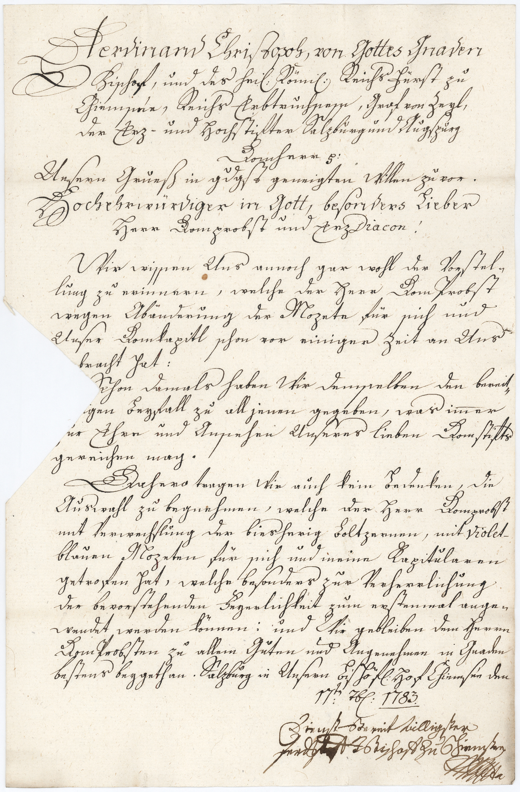

BayHStA, Herrenchiemsee KL, 57



Kommentar
Editor: magdalena.weileder@textgrid.de
Archiv: BayHStA
Bestand: Herrenchiemsee KL
Signatur: 57
Ort: Chiemsee, bischöflicher Hof
Datum: 1783 September 17
Schlagwort: Akt
Schwierigkeitsgrad: leicht
Kurzbetreff:
Reskript des Bischofs Ferdinand von Chiemsee
Reskript des Bischofs Ferdinand von Chiemsee
Schreiberhände:
- unbekannter Schreiber (S1)
- Bischof Ferdinand von Chiemsee (S2)
Kommentar:
In einem Reskript an den Dompropst und Erzdiakon von Chiemsee erlaubt Bischof Ferdinand den Domherren die Anschaffung neuer Mozetten. Während die alten Mozetten aus Pelz gefertigt waren („boltzern“), sollen die neuen, violettblauen – wie aus anderen Produkten des Akts hervorgeht – aus Seidenchiffon bestehen.
Zum Öffnen des ursprünglich gefalteten Papierbogens wurde das rückseitig aufgedrückte Verschlusssiegel ausgeschnitten, so dass auf Höhe der Zeilen 13–16 ein Stück fehlt. Da dieses sich noch unter dem Siegel befindet, kann der Text hier zweifelsfrei ergänzt werden.
Das Reskript zeigt die typische Kombination von Kurrent, Kanzlei als Auszeichnungsschrift und humanistischer Kursive für lateinische Begriffe (Z. 8: Diacon, Z. 20: Violet-).
Bei der Kanzleischrift, die für die jeweils erste Zeile von Intitulatio (Z. 1) und Anrede (Z. 7) verwendet wird, fallen die ungewöhnlichen Formen der schleifenreich verzierten F-Initiale und des p in Christoph sowie das ebenfalls vielfach verschleifte H (Z. 7) auf.
Auch in der Kurrent kommen ungewöhnliche Majuskelformen für D, E und F vor, auch die übrigen Großbuchstaben sind gut von den Kleinbuchstaben zu unterscheiden. Das lange s erscheint sowohl mit (z. B. Z. 4: Augspurg oder in Ligatur mit t, z. B. Z. 2: Fürst) als auch ohne Oberlänge (z. B. Z. 9: wissen, Z. 16: Ansehen), das runde s läuft in weitem Bogen nach links aus. Über dem ersten e des Doppelvokals ee wird ein vertikales Strichlein gesetzt (Z. 3, 26: Chiemsee), das c in der sch-Ligatur oft verschliffen.
Rechts unten befindet sich die eigenhändige Unterschrift des Bischofs in Kurrentschrift mit Subskriptionszeichen, dessen Auflösung nicht mehr nachvollziehbar ist.
In einem Reskript an den Dompropst und Erzdiakon von Chiemsee erlaubt Bischof Ferdinand den Domherren die Anschaffung neuer Mozetten. Während die alten Mozetten aus Pelz gefertigt waren („boltzern“), sollen die neuen, violettblauen – wie aus anderen Produkten des Akts hervorgeht – aus Seidenchiffon bestehen.
Zum Öffnen des ursprünglich gefalteten Papierbogens wurde das rückseitig aufgedrückte Verschlusssiegel ausgeschnitten, so dass auf Höhe der Zeilen 13–16 ein Stück fehlt. Da dieses sich noch unter dem Siegel befindet, kann der Text hier zweifelsfrei ergänzt werden.
Das Reskript zeigt die typische Kombination von Kurrent, Kanzlei als Auszeichnungsschrift und humanistischer Kursive für lateinische Begriffe (Z. 8: Diacon, Z. 20: Violet-).
Bei der Kanzleischrift, die für die jeweils erste Zeile von Intitulatio (Z. 1) und Anrede (Z. 7) verwendet wird, fallen die ungewöhnlichen Formen der schleifenreich verzierten F-Initiale und des p in Christoph sowie das ebenfalls vielfach verschleifte H (Z. 7) auf.
Auch in der Kurrent kommen ungewöhnliche Majuskelformen für D, E und F vor, auch die übrigen Großbuchstaben sind gut von den Kleinbuchstaben zu unterscheiden. Das lange s erscheint sowohl mit (z. B. Z. 4: Augspurg oder in Ligatur mit t, z. B. Z. 2: Fürst) als auch ohne Oberlänge (z. B. Z. 9: wissen, Z. 16: Ansehen), das runde s läuft in weitem Bogen nach links aus. Über dem ersten e des Doppelvokals ee wird ein vertikales Strichlein gesetzt (Z. 3, 26: Chiemsee), das c in der sch-Ligatur oft verschliffen.
Rechts unten befindet sich die eigenhändige Unterschrift des Bischofs in Kurrentschrift mit Subskriptionszeichen, dessen Auflösung nicht mehr nachvollziehbar ist.
Entzifferung
(Absatz Beginn)
1 (unbekannter Schreiber:) Ferdinand Christoph, von Gottes Gnaden
2 Bischof, und des hei(ligen) Römi(schen) Reichs Fürst zu
3 Chiemsee, Reichs Erbtruchsess, Graf von Zeyl,
4 der Erz- und Hochstifter Salzburg und Augspurg
5 Domherr (et cetera)
6 Unsern Grueß in g(nä)d(i)gst geneigten Willen zu vor.
7 Hochehrwürdiger in Gott, besonders Lieber
8 Herr Domprobst und ErzDiacon(Wechsel des Schriftsystems)!
9 Wir wissen Uns annoch gar wohl der Vorstel-
10 lung zu erinnern, welche der Herr DomProbst
11 wegen Abänderung der Mozete für sich und
12 Unser Domkapitl schon vor einiger Zeit an Uns
13 [ge]bracht hat:
14 Schon damals haben Wir demselben den bereit-
15 [will]igen Beyfall zu all jenen gegeben, was im(m)er
16 [Z]ur Ehre und Ansehen Unseres lieben Domstifts
17 gereichen mag.
18 Dahero tragen Wir auch kein Bedenken, die
19 Auswahl zu begnehmen, welche der Herr Domprobst
20 mit Verwechslung der biesherig Boltzernen, mit Violet(Wechsel des Schriftsystems)-
21 blauen Mozeten für sich und meine Kapitularen
22 getrofen hat, welche besonders zur Verherrlichung
23 der bevorstehenden Feyerlichkeit zum erstenmal ange-
24 wendet werden können: und Wir gebleiben dem Herrn
25 DomProbsten zu allem Guten und Angenehmen in Gnaden
26 bestens beygethan. Salzburg in Unsern Bischöf(lichen) Hof Chiemsee den
27 17te(n) 7b(ris) 1783.
28 (Bischof Ferdinand von Chiemsee:) Dienst-BereitWilligster
29 Ferd(inand)Christ(oph)a) Bischoff Zu Chiemsee
30 [Subskriptionszeichen]
(Absatz Ende)
a) "Christ(oph)"(Textzitat) durch Tintenklecks fast unkenntlich
Transkription
(Absatz Beginn)
1 (unbekannter Schreiber:) Ferdinand Christoph, von gottes gnaden
2 bischof, und des heiligen Römischen Reichs fürst zu
3 Chiemsee, reichserbtruchsess, graf von Zeyl,
4 der erz- und hochstifter Salzburg und Augspurg
5 domherr et cetera.
6 Unsern grueß in gnädigst geneigten willen zuvor.
7 Hochehrwürdiger in gott, besonders lieber
8 herr domprobst und erzdiacon(Wechsel des Schriftsystems)!
9 Wir wissen uns annoch gar wohl der vorstel-
10 lung zu erinnern, welche der herr domprobst
11 wegen abänderung der mozete für sich und
12 unser domkapitl schon vor einiger zeit an uns
13 [ge]bracht hat:
14 Schon damals haben wir demselben den bereit-
15 [will]igen beyfall zu all jenen gegeben, was immer
16 [z]ur ehre und ansehen unseres lieben domstifts
17 gereichen mag.
18 Dahero tragen wir auch kein bedenken, die
19 auswahl zu begnehmen, welche der herr domprobst
20 mit verwechslung der biesherig boltzernen, mit violet(Wechsel des Schriftsystems)-
21 blauen mozeten für sich und meine kapitularen
22 getrofen hat, welche besonders zur verherrlichung
23 der bevorstehenden feyerlichkeit zum erstenmal ange-
24 wendet werden können: und wir gebleiben dem herrn
25 domprobsten zu allem guten und angenehmen in gnaden
26 bestens beygethan. Salzburg, in unsern bischöflichen hof Chiemsee, den
27 17ten septembris 1783.
28 (Bischof Ferdinand von Chiemsee:) Dienstbereitwilligster
29 Ferdinand Christopha), bischoff zu Chiemsee
30 [Subskriptionszeichen]
(Absatz Ende)
a) "Christ"(Textzitat) für "Christoph"(Textzitat) durch Tintenklecks fast unkenntlich